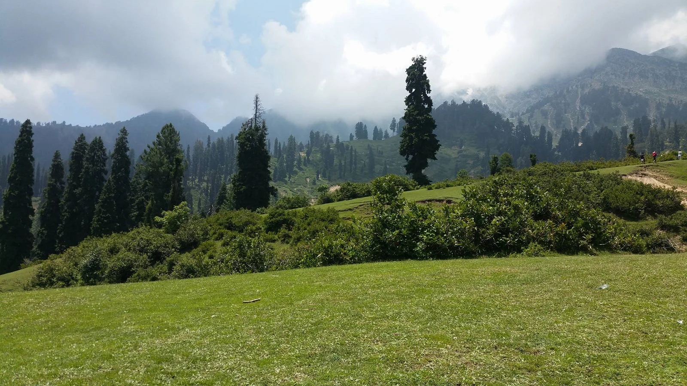
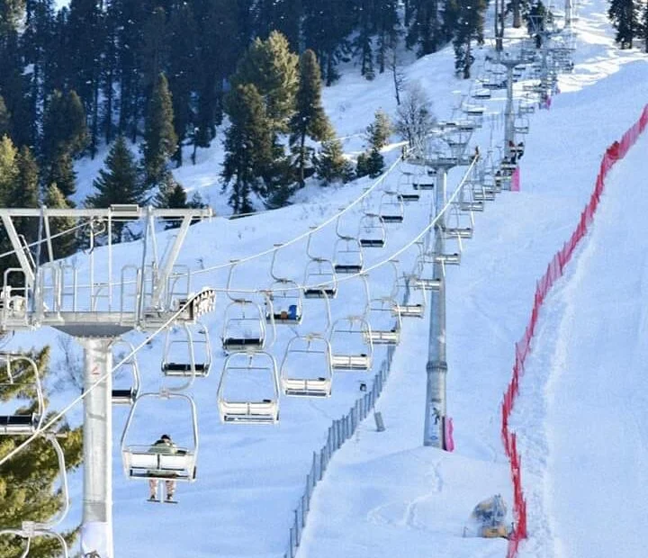
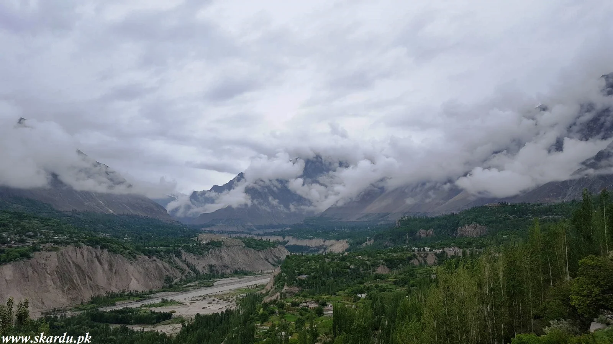

Welcome to Our Travel Website
Discover amazing destinations and book your next trip with us.
Book NowPopular Destinations

Neelam Valley
Neelam Valley is located in Azad Kashmir Pakistan. The valley is lush green and densely forested. The valley is named after the river Neelam.

Malam Jabba Ski resort
The famous and longest sky resort is the Malam Jabba Ski resort. Its length is 1 km. It is famous for the ski tournament every year.

Shangrila Resort, Skardu
Shangrila resort is one of the most beautiful places to visit in Pakistan. It is located in Kachura, Skardu Baltistan. Shangrila resort is located 15 Km in southwest of Skardu city.